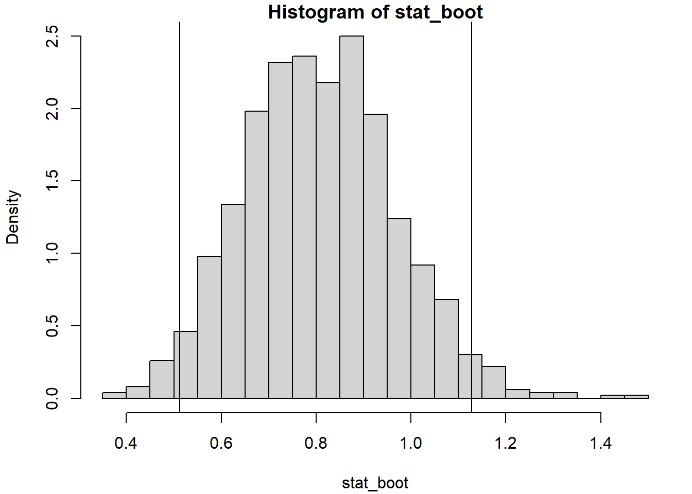
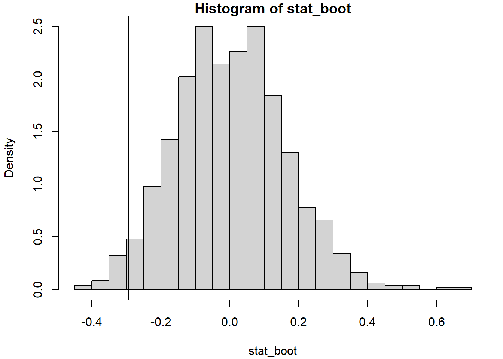
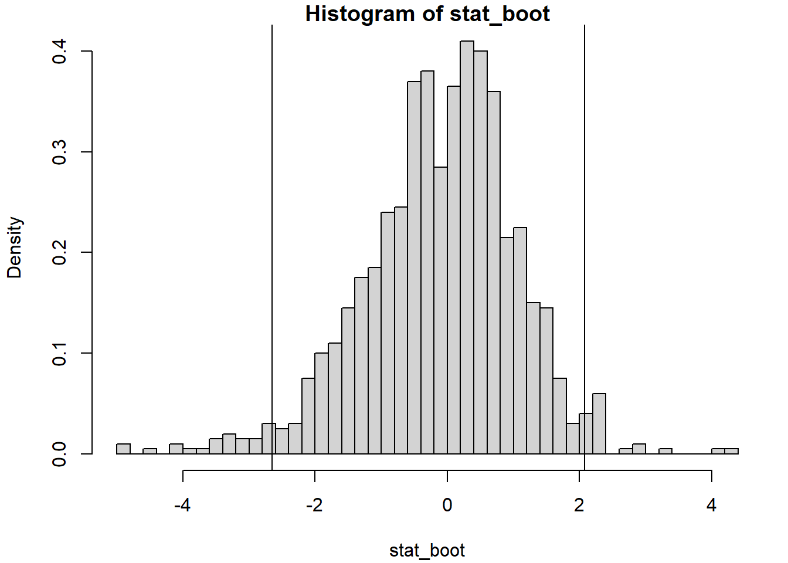

11.2 Intervalos de confianza bootstrap
En esta sección consideraremos el problema de construcción, mediante bootstrap, de un intervalo de confianza bilateral, con nivel de confianza \(1-\alpha\), para un parámetro \(\theta\) de la distribución \(F\). Una vez elegido el método bootstrap adecuado, teniendo en cuenta la información disponible en el contexto del que se trate, otro aspecto importante es el método para la construcción del intervalo de confianza bootstrap de forma que la probabilidad de cobertura sea lo más parecida posible al nivel nominal \(1-\alpha\).
Las diferencias entre los distintos métodos dependen del estadístico \(R\) empleado y de las suposiciones sobre su distribución.
Como se comentó en la Sección 9.3.1, la función boot.ci() del paquete boot permite construir distintos tipos de intervalos de confianza dependiendo del parámetro type.
En el Ejemplo 9.3 se ilustra la obtención de estimaciones por intervalo de confianza para la media empleando los distintos métodos bajo bootstrap uniforme (en el Capítulo 10 se incluyen ejemplos adicionales empleando bootstrap paramétrico y suavizado).
En esta sección se describirán brevemente los distintos métodos implementados en la función boot.ci().
Para un tratamiento más detallado, incluyendo los órdenes de los errores de cobertura, ver por ejemplo el Capítulo 4 de Cao y Fernández-Casal (2021) o el Capítulo 5 de Davison y Hinkley (1997).
11.2.1 Aproximación normal
Este método emplea las aproximaciones bootstrap del sesgo \(Sesgo^{\ast}\left( \hat{\theta}^{\ast} \right)\) y de la varianza \(Var^{\ast}\left( \hat{\theta}^{\ast} \right)\), y asume que la distribución del correspondiente estadístico studentizado es una normal estándar \[\frac{\hat{\theta} - Sesgo^{\ast}\left( \hat{\theta}^{\ast} \right) - \theta}{\sqrt{Var^{\ast}\left( \hat{\theta}^{\ast} \right)}} \underset{aprox}{\sim }\mathcal{N}\left( 0, 1 \right).\] De esta forma se obtiene la estimación por intervalo de confianza: \[\hat{I}_{norm}=\left( \hat{\theta} - Sesgo^{\ast}\left( \hat{\theta}^{\ast} \right) - z_{1-\alpha /2}\sqrt{Var^{\ast}\left( \hat{\theta}^{\ast} \right)},\hat{\theta} - Sesgo^{\ast}\left( \hat{\theta}^{\ast} \right) + z_{1 - \alpha /2}\sqrt{Var^{\ast}\left( \hat{\theta}^{\ast} \right)} \right).\]
Podemos obtener este intervalo de confianza estableciendo type = "norm" (o type = "all") en la llamada a la función boot.ci().
Para ilustrar como se obtiene reproduciremos el código del Ejemplo 9.3 (inferencia sobre la media de tiempos de vida de microorganismos empleando bootstrap uniforme):
library(boot)
muestra <- simres::lifetimes
statistic <- function(data, i){
remuestra <- data[i]
c(mean(remuestra), var(remuestra)/length(remuestra))
}
set.seed(1)
res.boot <- boot(muestra, statistic, R = 1000)
res.boot##
## ORDINARY NONPARAMETRIC BOOTSTRAP
##
##
## Call:
## boot(data = muestra, statistic = statistic, R = 1000)
##
##
## Bootstrap Statistics :
## original bias std. error
## t1* 0.805333 0.0031733 0.1583306
## t2* 0.025934 -0.0021558 0.0075947boot.ci(res.boot, type = "norm") # index = 1## BOOTSTRAP CONFIDENCE INTERVAL CALCULATIONS
## Based on 1000 bootstrap replicates
##
## CALL :
## boot.ci(boot.out = res.boot, type = "norm")
##
## Intervals :
## Level Normal
## 95% ( 0.4918, 1.1125 )
## Calculations and Intervals on Original ScalePodemos reproducir fácilmente estos cálculos. En primer lugar obtenemos las aproximaciones bootstrap del sesgo y del error estándar:
op <- with(res.boot, cbind(
t0, apply(t, 2, mean, na.rm = TRUE) - t0,
apply(t, 2, sd, na.rm = TRUE)
))
rownames(op) <- paste0("t", 1:ncol(res.boot$t), "*")
colnames(op) <- c("original", "bias ", " std. error")
op## original bias std. error
## t1* 0.805333 0.0031733 0.1583306
## t2* 0.025934 -0.0021558 0.0075947index <- 1
estim <- op[index, 1]
sesgo_boot <- op[index, 2]
sd_boot <- op[index, 3]y construimos la estimación por intervalo de confianza:
alfa <- 0.05
z <- qnorm(1 - alfa/2)
ic_inf <- estim - sesgo_boot - z*sd_boot
ic_sup <- estim - sesgo_boot + z*sd_boot
IC <- c(ic_inf, ic_sup)
IC## [1] 0.49184 1.1124811.2.2 Método percentil directo
Este método se basa en la construcción del intervalo de confianza, mediante bootstrap, empleando como estadístico el estimador \[R = \hat{\theta}.\]
Una vez elegido el método de remuestreo, empleando un estimador, \(\hat{F}\,\), de la distribución poblacional, \(F\), la distribución en el muestreo de \(R = \hat{\theta}\) se aproxima directamente mediante la distribución bootstrap de \(R^{\ast}= \hat{\theta}^{\ast}\). A partir de las réplicas bootstrap del estimador aproximamos los cuantiles \(x_{\alpha /2}\) y \(x_{1-\alpha /2}\) (denotando por \(x_{\beta }\) el valor verificando \(P^{\ast}\left( R^{\ast }\leq x_{\beta } \right) =\beta\)), de forma que \[\begin{aligned} 1-\alpha &= 1-\frac{\alpha }{2}-\frac{\alpha }{2} = P^{\ast}\left( \hat{\theta}^{\ast}<x_{1-\alpha /2} \right) - P^{\ast}\left( \hat{\theta}^{\ast}\leq x_{\alpha /2} \right) \\ &= P^{\ast}\left( x_{\alpha /2}<\hat{\theta}^{\ast}<x_{1-\alpha /2} \right), \end{aligned}\] y asumimos que esto aproxima lo que ocurre con la distribución poblacional \[P\left( x_{\alpha /2} < \hat{\theta} < x_{1-\alpha /2} \right) \approx 1-\alpha.\] De donde se obtiene el intervalo de confianza bootstrap calculado por el método percentil directo \[\hat{I}_{perc}=\left( x_{\alpha /2}, x_{1-\alpha /2} \right).\]
Una ventaja de los intervalos construidos con este método es que son invariantes frente a transformaciones del estimador (en el caso de que fuese más adecuado trabajar en otra escala, no sería necesario conocer la transformación). Sin embargo, como se comentó en la Sección 9.1, la precisión puede verse seriamente afectada en el caso de estimadores sesgados.
Podemos obtener este intervalo de confianza estableciendo type = "perc" (o type = "all") en la llamada a la función boot.ci().
Continuando con el Ejemplo 9.3:
boot.ci(res.boot, type = "perc") # index = 1## BOOTSTRAP CONFIDENCE INTERVAL CALCULATIONS
## Based on 1000 bootstrap replicates
##
## CALL :
## boot.ci(boot.out = res.boot, type = "perc")
##
## Intervals :
## Level Percentile
## 95% ( 0.5127, 1.1282 )
## Calculations and Intervals on Original ScaleA título ilustrativo podemos reproducir los cálculos:
index <- 1
stat_boot <- res.boot$t[, index]
# Utilizamos el mismo método que el paquete boot para aproximar los cuantiles:
IC_boot <- quantile(stat_boot, c(alfa/2, 1 - alfa/2), type = 6)
# (normalmente usaríamos el valor por defecto type = 7):
IC_boot## 2.5% 97.5%
## 0.51265 1.12820hist(stat_boot, breaks = "FD", freq = FALSE)
abline(v = IC_boot)
11.2.3 Método percentil básico
En este método se emplea como estadístico el estimador centrado (no estandarizado) \[R = \hat{\theta}-\theta.\] De forma análoga, la distribución en el muestreo de \(R\) se aproxima mediante la distribución bootstrap de \[R^{\ast}= \hat{\theta}^{\ast}-\theta \left( \hat{F} \right) = \hat{\theta}^{\ast}-\hat{\theta}.\] A partir de las réplicas bootstrap del estadístico se aproximan los cuantiles \(x_{\alpha /2}\) y \(x_{1-\alpha /2}\) tales que \[1-\alpha = P^{\ast}\left( x_{\alpha /2}<R^{\ast}<x_{1-\alpha /2} \right),\] tomándolo como aproximación de lo que ocurre con la distribución poblacional \[\begin{aligned} 1-\alpha &\approx P\left( x_{\alpha /2}<R<x_{1-\alpha /2} \right) \\ &= P\left( x_{\alpha /2} < \hat{\theta}-\theta < x_{1-\alpha /2} \right) \\ &= P\left( \hat{\theta} - x_{1-\alpha /2} < \theta <\hat{\theta} -x_{\alpha /2} \right). \end{aligned}\] De donde se obtiene el intervalo de confianza bootstrap calculado por el método percentil básico \[\hat{I}_{basic}=\left( \hat{\theta} - x_{1-\alpha /2},\hat{\theta} - x_{\alpha /2} \right).\]
Podemos obtener este intervalo de confianza estableciendo type = "basic" (o type = "all") en la llamada a la función boot.ci().
Siguiendo con el Ejemplo 9.3):
boot.ci(res.boot, type = "basic") # index = 1## BOOTSTRAP CONFIDENCE INTERVAL CALCULATIONS
## Based on 1000 bootstrap replicates
##
## CALL :
## boot.ci(boot.out = res.boot, type = "basic")
##
## Intervals :
## Level Basic
## 95% ( 0.4825, 1.0980 )
## Calculations and Intervals on Original ScaleReproducimos también los cálculos (únicamente por proporcionar más detalles):
index <- 1
estim <- res.boot$t0[index]
# Réplicas bootstrap del estadístico centrado:
stat_boot <- res.boot$t[, index] - estim
# Aproximación bootstrap de los ptos críticos
pto_crit <- quantile(stat_boot, c(alfa/2, 1 - alfa/2), type = 6)
# Al igual que en el caso anterior, para obtener exactamente el mismo resultado,
# utilizamos el mismo método que el paquete boot para aproximar los cuantiles
# (normalmente usaríamos el valor por defecto type = 7)
# Distribución bootstrap del estadístico centrado:
hist(stat_boot, breaks = "FD", freq = FALSE)
abline(v = pto_crit)
# Construcción del IC
ic_inf_boot <- estim - pto_crit[2]
ic_sup_boot <- estim - pto_crit[1]
IC_boot <- c(ic_inf_boot, ic_sup_boot)
names(IC_boot) <- paste0(100*c(alfa/2, 1-alfa/2), "%")
IC_boot## 2.5% 97.5%
## 0.48247 1.0980211.2.4 Método percentil-t
Este método bootstrap, construye un intervalo de confianza bootstrap a partir del estadístico studentizado: \[R = \frac{\hat \theta - \theta}{\sqrt{\widehat{Var}(\hat \theta)}}.\] Procediendo de modo análogo a los casos anteriores, se aproximan los cuantiles \(x_{\alpha /2}\) y \(x_{1-\alpha /2}\) tales que \[1-\alpha = P^{\ast}\left( x_{\alpha /2}<R^{\ast}<x_{1-\alpha /2} \right),\] y considerando que aproximan lo que ocurre con la distribución poblacional: \[\begin{aligned} 1-\alpha &\approx P\left( x_{\alpha /2}<R<x_{1-\alpha /2} \right) \\ &= P\left( x_{\alpha /2} < \frac{\hat \theta - \theta}{\sqrt{\widehat{Var}(\hat \theta)}} < x_{1-\alpha /2} \right), \end{aligned}\] se obtiene el intervalo de confianza bootstrap calculado por el método percentil-t (o percentil studentizado) \[\hat{I}_{stud}=\left( \hat{\theta} - x_{1-\alpha /2}\sqrt{\widehat{Var}(\hat \theta)},\hat{\theta} - x_{\alpha /2}\sqrt{\widehat{Var}(\hat \theta)} \right).\]
Si el segundo de los componentes del vector de estadísticos es una estimación de la varianza del primer componente (el estimador), obtendríamos este intervalo de confianza con las opciones por defecto (type = "all") de la función boot.ci() o estableciendo type = "stud" (en cualquier caso siempre calcularía “uno” si hay al menos dos componentes en el vector de estadísticos, o generará un aviso si solo hay uno).
En caso de que el primer y segundo componente del vector de estadísticos no sean el estimador y su varianza estimada, respectivamente, habrá que establecer el argumento index igual a las posiciones correspondientes (vector de longitud 2).
Continuando con el Ejemplo 9.3):
boot.ci(res.boot, type = "stud") # index = c(1, 2)## BOOTSTRAP CONFIDENCE INTERVAL CALCULATIONS
## Based on 1000 bootstrap replicates
##
## CALL :
## boot.ci(boot.out = res.boot, type = "stud")
##
## Intervals :
## Level Studentized
## 95% ( 0.4715, 1.2320 )
## Calculations and Intervals on Original ScaleReproducimos también los cálculos (únicamente a título ilustrativo):
index <- c(1, 2)
estim <- res.boot$t0[index[1]]
var_estim <- res.boot$t0[index[2]]
# Réplicas bootstrap del estadístico studentizado:
stat_boot <- (res.boot$t[, index[1]] - estim)/sqrt(res.boot$t[, index[2]])
# Aproximación bootstrap de los ptos críticos
pto_crit <- quantile(stat_boot, c(alfa/2, 1 - alfa/2), type = 6)
# Al igual que en el caso anterior, para obtener exactamente el mismo resultado,
# utilizamos el mismo método que el paquete boot para aproximar los cuantiles
# (normalmente usaríamos el valor por defecto type = 7)
# Distribución bootstrap del estadístico studentizado:
hist(stat_boot, breaks = "FD", freq = FALSE)
abline(v = pto_crit)
# Construcción del IC
ic_inf_boot <- estim - pto_crit[2] * sqrt(var_estim)
ic_sup_boot <- estim - pto_crit[1] * sqrt(var_estim)
IC_boot <- c(ic_inf_boot, ic_sup_boot)
names(IC_boot) <- paste0(100*c(alfa/2, 1-alfa/2), "%")
IC_boot## 2.5% 97.5%
## 0.47154 1.2319811.2.5 Método BCa
El método \(BCa\) (bias-corrected and accelerated) propuesto por Efron (1987) considera una transformación de forma que la distribución se aproxime a la normalidad, construye el intervalo en esa escala asumiendo normalidad y transforma el resultado a la escala original empleando la distribución bootstrap.
El intervalo obtenido es de la forma:
\[\hat{I}_{bca}=\left( x_{\alpha /2}, x_{1-\alpha /2} \right),\]
donde
\[x_u = \hat G^{-1}\left(\Phi\left(z + \frac{z + z_u}{1-a(z+z_u)}\right) \right),\]
siendo \(\hat G\) la distribución empírica de \(\hat{\theta}^{\ast}\), \(\Phi(z)\) la función de distribución de la normal estándar, \(z_u = \Phi^{-1}(u)\) el correspondiente cuantil y:
- \(z = \Phi^{-1}(\hat G(\hat\theta))\) un factor de corrección de sesgo.
- \(a\) la denominada constante aceleradora (o corrección de asimetría), que suele ser aproximada mediante jackknife.
Podemos obtener este intervalo de confianza estableciendo type = "bca" (o type = "all") en la llamada a la función boot.ci() (ver Ejemplo 9.3).
Para más detalles ver Sección 5.3.2 de Davison y Hinkley (1997).
Ejercicio 11.2
Como continuación del ejemplo mostrado en la Sección 9.3.3, y de los Ejercicios 9.1 y 11.1, emplear el paquete boot para obtener estimaciones por intervalo de confianza del coeficiente de correlación lineal \(r\) entre prestige e income del conjunto de datos Prestige (mediante bootstrap uniforme multidimensional).
En el caso del método percentil-t, como se indicó en el Ejercicio 9.1, considerar el estimador de la varianza:
\[\widehat{Var}(r) = \frac{1 - r^2}{n - 2}.\]
Comparar los resultados con la aproximación paramétrica implementada en la función cor.test y descrita en la siguiente sección.
11.2.6 Ejemplo: IC bootstrap para el coeficiente de correlación
Supongamos de nuevo que queremos estudiar la correlación entre dos variables \(X\) e \(Y\) a partir del coeficiente de correlación lineal de Pearson: \[\rho =\frac{ Cov \left( X, Y \right) } { \sigma \left( X \right) \sigma \left( Y \right) },\] empleando como estimador el coeficiente de correlación muestral: \[r=\frac{\sum_{i=1}^{n}(x_i-\overline{x})(y_i-\overline{y})} {\sqrt{ \sum_{i=1}^{n}(x_i-\overline{x})^{2}} \sqrt{\sum_{i=1}^{n}(y_i-\overline{y})^{2}}}.\]
Para realizar inferencias sobre el coeficiente de correlación, como aproximación más simple, se puede considerar que la distribución muestral de \(r\) es aproximadamente normal (ver Ejercicio 9.1) y emplear el estadístico:
\[\begin{equation} \frac{r -\rho}{\sqrt{\frac{1 - r^2}{n - 2}}} \underset{aprox}{\sim } t_{n-2} \tag{11.1} \end{equation}\]
Pero esta aproximación solo sería válida en el caso de muestras grandes (o si la distribución bivariante de \((X, Y)\) es aproximadamente normal) cuando la correlación entre las variables es débil o moderada. En caso contrario la distribución muestral de \(r\) puede ser muy asimétrica y los resultados obtenidos con el estadístico anterior no ser muy adecuados (esto concuerda con lo observado en la Sección 9.3.3, al emplear bootstrap uniforme multidimensional para hacer inferencia sobre \(R = r -\rho\)). Para evitar este problema se suelen obtener intervalos de confianza para \(\rho\) empleando la transformación \(Z\) de Fisher (1915): \[Z = \frac{1}{2}\ln \left( \frac{1+r}{1-r} \right) = \operatorname{arctanh}(r),\] que es una transformación (aprox.) normalizadora y estabilizadora de la varianza. Suponiendo que \((X, Y)\) es normal bivariante y que hay independencia entre las observaciones: \[Z \sim \mathcal{N}\left( \frac{1}{2}\ln \left( \frac{1+\rho}{1-\rho} \right), \frac{1}{n-3} \right).\] El intervalo de confianza asintótico se obtiene empleando la aproximación normal tradicional en la escala \(Z\) y aplicando posteriormente la transformación inversa: \[r = \frac{\exp(2Z)-1}{\exp(2Z)+1} = \operatorname{tanh}(Z).\]
Esta aproximación está implementada en la función cor.test() del paquete base stat de R41, además de que también realiza el contraste \(H_0: \rho = 0\) empleando el estadístico (11.1).
Continuando con el ejemplo de la Sección 9.3.3 (y de los Ejercicios 9.1, 11.1 y 11.2), para obtener un intervalo de confianza para el coeficiente de correlación lineal entre las variables income y prestige del conjunto de datos Prestige, podríamos emplear el siguiente código:
data(Prestige, package="carData")
# with(Prestige, cor.test(income, prestige))
cor.test(Prestige$income, Prestige$prestige)##
## Pearson's product-moment correlation
##
## data: Prestige$income and Prestige$prestige
## t = 10.2, df = 100, p-value <2e-16
## alternative hypothesis: true correlation is not equal to 0
## 95 percent confidence interval:
## 0.60447 0.79838
## sample estimates:
## cor
## 0.71491También es de esperar que mejore la precisión de los intervalos de confianza bootstrap si se emplea una transformación que estabilice la varianza del estimador, especialmente en el caso del método basado en la aproximación normal y del bootstrap percentil básico.
La función boot.ci() del paquete boot permite obtener intervalos de confianza calculados en una escala transformada del estadístico, mediante los parámetros:
h: función vectorial que define la transformación. Los intervalos se calculan en la escala de \(h(t)\) y se aplica la función inversa (si se especifica) para transformarlos a la escala original.hinv: (opcional) función inversa de la transformación (si no se especifica solo se calculan los intervalos en la escala transformada).hdot: (opcional en el método percentil o básico) función derivada de la transformación (empleada por algunos métodos para aproximar la varianza en la escala transformada mediante el método delta).
Por ejemplo, para considerar la transformación \(Z\) de Fisher en este caso, se podría emplear el siguiente código:
library(boot)
statistic <- function(data, i){
remuestra <- data[i, ]
cor(remuestra$income, remuestra$prestige)
}
set.seed(1)
res.boot <- boot(Prestige, statistic, R = 1000)
h <- function(t) atanh(t)
hdot <- function(t) 1/(1 - t^2)
hinv <- function(t) tanh(t)
# boot.ci(res.boot, type = "norm", h = h)
boot.ci(res.boot, type = "norm", h = h, hdot = hdot, hinv = hinv)## BOOTSTRAP CONFIDENCE INTERVAL CALCULATIONS
## Based on 1000 bootstrap replicates
##
## CALL :
## boot.ci(boot.out = res.boot, type = "norm", h = h, hdot = hdot,
## hinv = hinv)
##
## Intervals :
## Level Normal
## 95% ( 0.6016, 0.7858 )
## Calculations on Transformed Scale; Intervals on Original ScaleEsto sería en principio preferible a trabajar en la escala original, ya que la distribución bootstrap en la escala transformada se aproximaría más a la normalidad:
ht <- h(res.boot$t)
hist(ht, freq = FALSE, breaks = "FD", main = "")
curve(dnorm(x, mean=mean(ht), sd=sd(ht)), lty = 2, add = TRUE)Figura 11.1: Distribución bootstrap en la escala transformada.
Se puede obtener el código tecleando en la consola
stats:::cor.test.default.↩︎